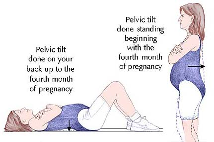
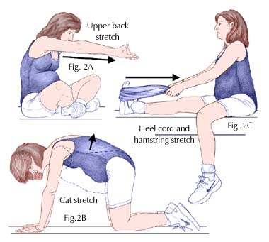
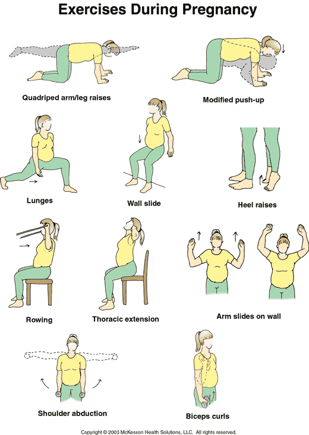
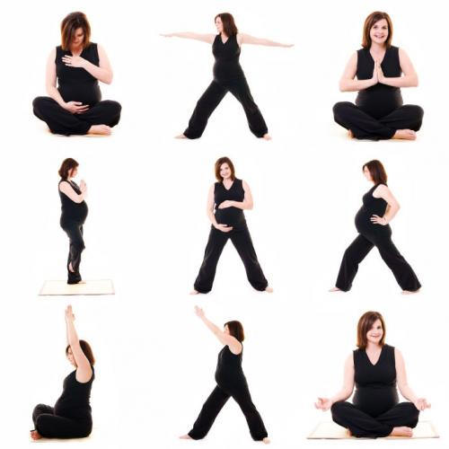

Exercising
during
Pregnancy
The key word in pregnancy is change. During this 40-week period, a woman's
body goes through many changes including stretching of muscles, softening of
ligaments (tissues connecting two bones), and loosening of joints. You can
better adapt to these physiologic changes through regular exercise. By using
common sense and understanding your individual needs, you can plan and
participate in a safe and effective exercise program throughout your
pregnancy and your life.
Whether you're a seasoned athlete or a self-proclaimed couch potato,
exercise can make your pregnancy much more enjoyable. If you exercised
regularly before pregnancy, the American College of Obstetricians and
Gynecologists recommends that you take precautions and receive ongoing
guidance from your doctor. Focus on maintaining your previous level of
fitness rather than on advancing your fitness level. If you have been
inactive and want to start an exercise program, talk with your doctor. He or
she can help you design a program best suited to your needs and abilities.
You should wait to start this program until the second trimester (weeks 13
to 28) of pregnancy. Starting the program before this time potentially can
lead to birth defects and other complications due to overheating.
A safe type of exercise program for most pregnant women includes
cardiovascular fitness, muscle strengthening, stretching, and relaxation.
These exercises should be done regularly - at least three times each week.
The workout intensity should be light to moderate, and your heart rate
should not exceed 140 beats per minute.
Warming up
A warm-up exercise should precede any physical activity. It should consist
of slow walking or stationary bicycling for five to eight minutes followed
by a gentle, sustained stretch to the point of mild tension. Do not stretch
to the point of pain and do not stretch as far as you can go. Remember, your
connective tissues, such as muscles and ligaments, are lax.
Cardiovascular exercise
The ideal type of cardiovascular exercise during pregnancy is
nonweight-bearing activities, such as stationary bicycling, swimming, and
aquatic exercising. Exercising in the water provides buoyancy, increases
joint cushioning, and enhances heat dissipation. While in the water, you may
find that the strain on your back decreases - a welcome relief, especially
late in pregnancy. However, when exercising in a heated pool, limit the
amount of time you spend in that environment. The warm water may cause your
internal temperature to rise, which can be unsafe for your baby. If you are
uncomfortably warm, you need to get out of the pool.
Walking is another good activity for the beginning exerciser and for the
long-time athlete who wants to maintain a good level of fitness. If you are
an avid exerciser, take common sense precautions and consult your doctor if
you plan to continue more strenuous activities, such as jogging or
low-impact aerobics.
Strengthening
In addition to aerobic activity, you need to strengthen your muscles. The
extra weight carried during pregnancy can cause back pain. To prevent this
pain, strengthen your abdominal and back muscles by doing the pelvic tilt
(Figs. 1A and 1B).

If you lift weights, make sure you only lift a weight equal to or less than
the weight you lifted before pregnancy. You are lifting to maintain previous
muscle tone and not lifting to build muscle mass. Remember to exhale on the
contraction of the muscle. Holding your breath then forcibly exhaling (the
Valsalva maneuver) while lifting these weights decreases blood flow to your
heart. During the third trimester (week 28 to birth), you can use hand-held
weights if you are careful; your body has had many physiologic changes and
is not as balanced as it was before pregnancy. If you experience chronic
fatigue or exhaustion from exercise, discontinue exercising and consult your
physician.
Include Kegel exercises to strengthen the muscles used in labor. To do these
exercises, contract and release the perineum (the pelvic floor and
associated structures). This movement is the same one used to stop the urine
stream.
Stretching and relaxing
Take
the time to stretch and relax during pregnancy (Figs. 2A and 2B). Always
avoid jerky or bouncy motions when you stretch. Control your breathing by
slowing inhaling and exhaling. Remember to stretch your entire body,
especially the heel cords to prevent leg cramping (Fig. 2C). After the
fourth month, avoid lying flat on your back or on your right side when
exercising or relaxing. This position restricts the blood flow to the
uterus. It is best to lie on your left side.
Special considerations
Exercising mothers-to-be need to avoid overexerting themselves. Limit your
exercise outings to 15 minutes. Wear supportive shoes and watch the surface
carefully to avoid losing your balance and injuring yourself. On hot, humid
days, find a cool place to exercise, such as a mall or a health club. Drink
plenty of water before, during, and after exercising to avoid dehydration.
Drink at least eight glasses of water each day and, on workout days, drink
extra glasses to replenish the fluid lost. Do not participate in activities,
such as ball sports, that put you at risk for a blow to your abdominal
area.
Your body needs more energy from food during pregnancy. A pregnant woman
normally needs to consume about 300 calories more than she did before
pregnancy. When you exercise, you need to consume enough calories to offset
the calories you burn.
Exercise can help you maintain a positive self-image and physical well being
during this time. It can help you feel in control of your body and can make
pregnancy a little easier. Continue exercising throughout pregnancy, the
postpartum period, and the rest of your life.
Mary Ann Collins
Columbus, Georgia
|  |
|  |